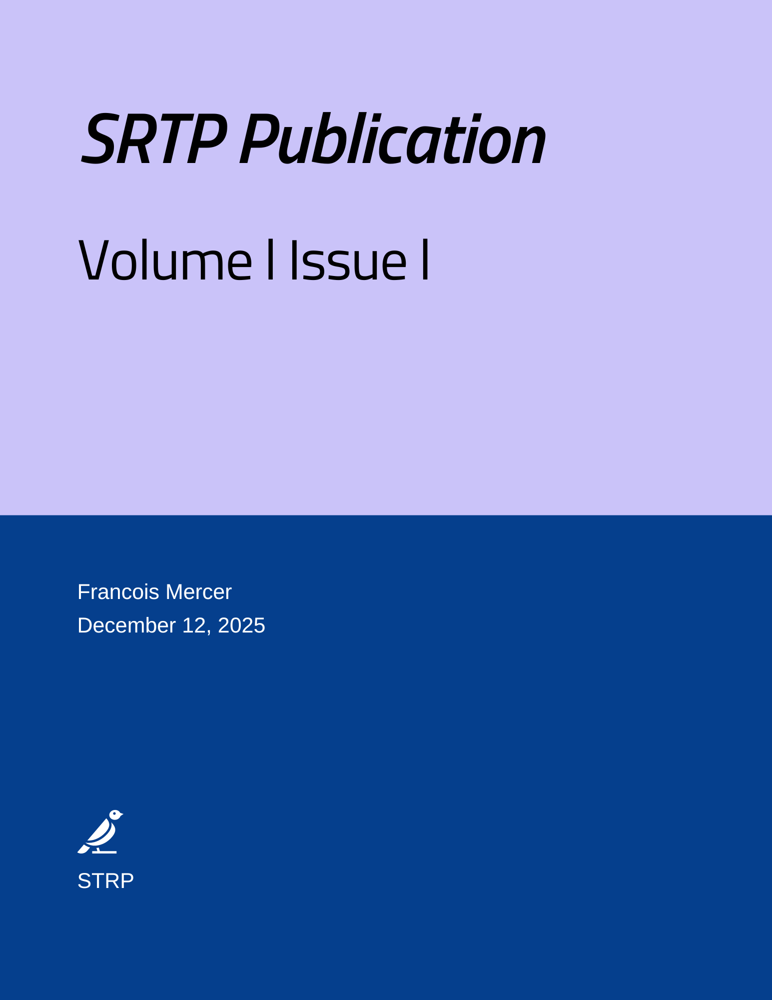

Previous issue
The Long-Term Impacts of Climate Change on Marine Ecosystems: A Study of Coral Bleaching and Ocean Acidification in the Pacific Ocean
Dr. Alice Montgomery, Dr. Rajiv Patel
Innovative Water Conservation Techniques in Sustainable Agriculture: Evaluating the Efficacy of Drip Irrigation and Soil Moisture Monitoring in Arid Regions
Dr. Emily Chang, Prof. Jacob O'Neil
Call for Papers - Volume 157 Issue 1
ISSN number : 2708-3578 (Online)
Submission Start From : 16 Sep 2024
Acceptance Notification : 03 Oct 2024
Copyright Transfer : 06 Oct 2024
E-Publication : 08 Oct 2024
Publication Fee : 40 USD
Open Access Fee : FREE